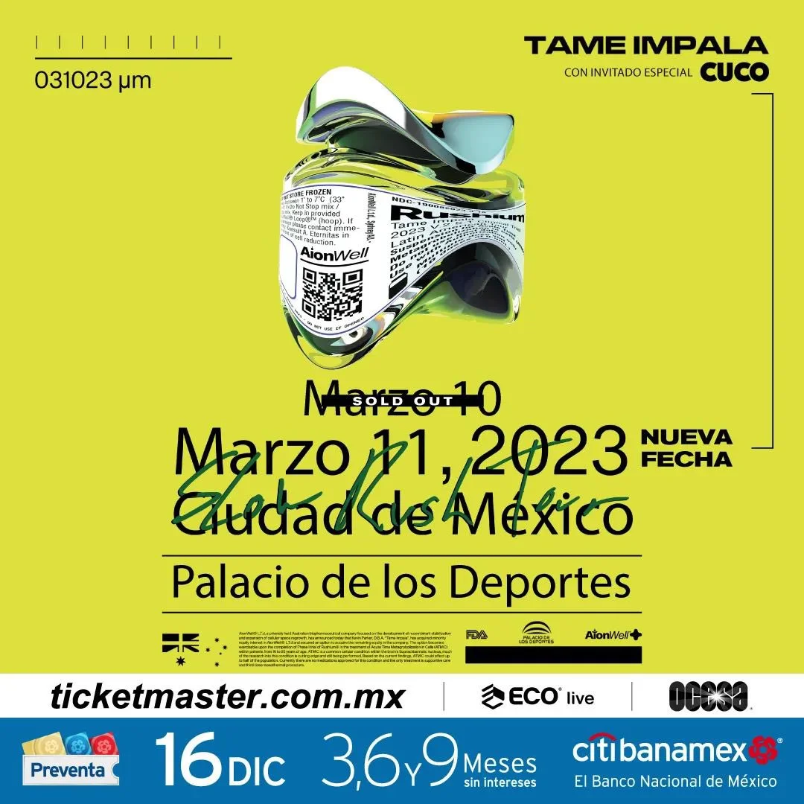

-

Def Leppard
Se ha confirmado que Motley crue regresa ua vez mas y esta vez acompañado de Def Leppard presentandose 3 fechas en el Foro Sol, tendán mas andas invitadas, esto como parte de su gira despues de haber dicho que no tocarían mas.
-

El EDC con el Lineup mas grande
Se ha publicado el cartel para el EDC México en esta edición tiraron la casa por la ventana ya que hay mas de 100 DJ en el cartel, y ahora ya no solo son 2 días, si no 3 dando cuenta del exito que ha tenido este festival.
-
Otro festival más llega

Aparte del EDC se confirma que un nuevo festival llega a México se trata de la primera edición Vampire, trayendo bandas del punk, esta primera edición se celebrara en el Foro Sol, por lo que este recinto recibira mucho eventos.
-
Llego Tame Impala a Palacio de los Deportes
Tame Impala la banda lidereada por Kevin Parker llega una vez más a la Ciudad de México con 2 fechas contando en ambas presentaciones con un diferente invitado, se habla de que los acompañara la banda MGMT dado que se encuentran en CDMX.
-
Ghost una vez más en CDMX

Ghost acaba de anunciar sus fechas en la Ciudad de México, dará 2 conciertos los cuales anteriormente fueron cancelados debido a la pandemia mundial Covid y al parecer no vendrán solos ya que se rumora que tengan bandas invitadas, esto aun no ha sido confirmado por la banda.